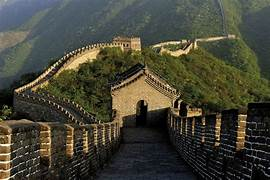
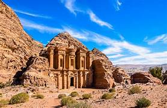
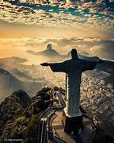
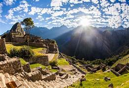
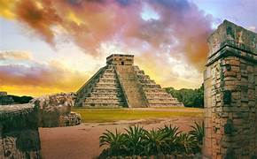
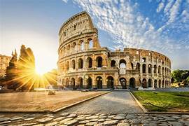
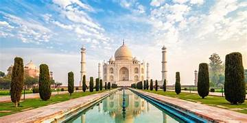

La Gran Muralla China es una fortificación construida para proteger a China de las invasiones nómadas. A lo largo de miles de kilómetros, se extiende por diversas provincias y paisajes montañosos.
Petra es una ciudad histórica y arqueológica famosa por su arquitectura tallada en roca. Fue la capital del antiguo reino nabateo y es conocida como la "Ciudad Rosa".
El Cristo Redentor es una estatua monumental de Jesucristo ubicada en la cima del cerro del Corcovado en Río de Janeiro. Es un símbolo del cristianismo y una de las principales atracciones turísticas de Brasil.
Machu Picchu es una antigua ciudad inca enclavada en lo alto de los Andes. Es conocida por su intrincada arquitectura y vistas impresionantes, siendo una de las mayores joyas arqueológicas de América del Sur.
Chichén Itzá fue una gran ciudad maya ubicada en la península de Yucatán. Es famosa por su pirámide de Kukulkán, un testimonio de los avances en astronomía y arquitectura de los mayas.
El Coliseo es un anfiteatro icónico de la antigua Roma, conocido por albergar espectáculos de gladiadores y eventos públicos. Es una de las estructuras más emblemáticas del Imperio romano.
El Taj Mahal es un mausoleo de mármol blanco construido por el emperador Shah Jahan en memoria de su esposa Mumtaz Mahal. Es uno de los mayores ejemplos de la arquitectura mogol y una maravilla mundial por su belleza y simetría.

¿Qué son las maravillas del mundo?
Son una selección de construcciones, monumentos o sitios considerados extraordinarios por su valor histórico, cultural, arquitectónico o artístico. Estas maravillas han sido reconocidas por su capacidad de inspirar asombro y por su importancia en la historia de la humanidad.
¿Sabías que existe otra clasificación de maravillas del mundo?
Estas son llamadas "Las 7 maravillas del mundo antiguo". Son un conjunto de obras arquitectónicas y escultóricas que los antiguos griegos consideraban impresionantes, aunque solo la Gran Pirámide de Guiza aún existe. Ejemplos incluyen el Templo de Artemisa y el Coloso de Rodas.
Autor:Camila Zavaleta Flores.